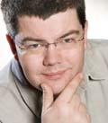
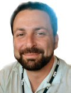

Keynote Speakers
Andreas Zeller, Saarland University, Germany

Where do Bugs Come From?
Download the slides of this talk.
Speaker Biography
Andreas Zeller is computer science professor at Saarland University; he researches large programs and their history, and has developed a number of methods to determine the causes of program failures - on open-source programs as well as in industrial contexts at IBM, Microsoft, SAP and others. His book "Why Programs Fail" has received the Software Development Magazine productivity award in 2006.
Andreas' homepage can be found at: http://www.st.cs.uni-sb.de/zeller.
Marat Boshernitsan, Agitar Software Inc., USA

Trends and Techniques in Unit Testing: From Daikon to Agitator and Beyond
Download the slides of this talk.
Unit testing is a very effective strategy for improving the quality of software, reducing its cost, and accelerating its development. Despite its widely recognized benefits, unit testing is practiced by only a minority of developers. The slow adoption of unit testing is largely due to the lack of tools that automate the tedious and time-consuming aspects of this practice. Motivated by the need for a solution and inspired by the research in test-input generation and automatic discovery of program specifications, we devised a unit-testing technique called software agitation. We implemented this technique in Agitator, a commercial testing engine that is part of our comprehensive testing product called AgitarOne.
In this talk I will trace Agitator's research lineage, emphasizing the tradeoffs between completeness, correctness, usability, and performance that were necessary to create a commercially successful product. I will also describe how the Agitator engine is used for automatic generation of characterization tests that can be used to tackle the legacy code problem. Finally, I will offer some insights, based on our hard-learned lessons, on what it takes to transition research results into tools that can be deployed in software development trenches.
Speaker Biography
Marat Boshernitsan is a researcher and a software developer who is curious about how humans create software. Marat's research focuses on building tools that empower software developers to create higher quality and more maintainable software, while not getting in the way of their work. Marat currently indulges his interests as the Director of Research at Agitar Software, where he works on a wide range of software development problems related to automated testing of software. In the past Marat has worked on a program editor that provided typographically-grounded automatic formatting to improve readability of source code (at SunLabs) and on a system for automating systematic source code editing using interactive code transformations (as part of his dissertation research). Marat received his Ph.D. in Computer Science from the University of California, Berkeley under the direction of Susan Graham.